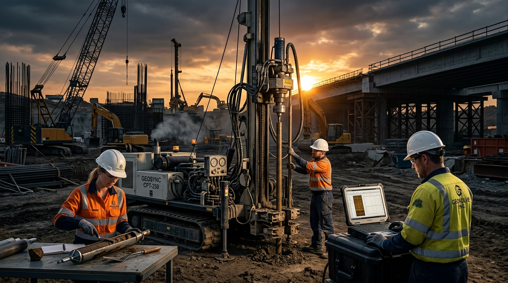

Investigasi Tanah & Analisis Geoteknik Presisi
Menyediakan layanan pengujian sondir CPT, boring machine, sampling lapisan tanah, uji laboratorium mekanika tanah, serta analisa daya dukung pondasi untuk proyek konstruksi dan pertambangan.

Keamanan Konstruksi Berdasar Data Presisi
Jasa Geoteknik merupakan unit usaha spesialis dari Buwas Ikigai Nusantara yang menyediakan analisis geologi, penyelidikan tanah teknis, dan perencanaan pondasi aman bagi infrastruktur sipil, gedung tinggi, dan kawasan pertambangan.
Didukung oleh armada rig mesin bor canggih, alat sondir hidrolik CPT, serta laboratorium mekanika tanah berstandar SNI dan ASTM, kami menyajikan data teknis komprehensif untuk mencegah kegagalan struktur dan optimasi biaya konstruksi.
Solusi Penyelidikan & Testing Tanah
Pengujian lapangan dan laboratorium geoteknik sesuai standar nasional & internasional.
Uji Sondir (CPT / CPTu)
Pengujian penetrasi konus (Dutch Cone Penetrometer) hingga kedalaman tanah keras untuk mengukur perlawanan penetrasi dan hambatan pelekat.
Pengeboran Mesin & Core Sampling (SPT)
Pengeboran inti tanah (Core Drilling) disertai pengambilan sampel undisturbed/disturbed serta pengujian Standard Penetration Test (SPT).
Uji Laboratorium Mekanika Tanah
Pengujian konsolidasi, triaxial, atterberg limit, kadar air, berat jenis, sieve analysis, dan kuat geser tanah di lab terakreditasi.
Analisis Stabilitas Lereng & Pondasi
Perhitungan daya dukung izin pondasi dangkal/dalam, kalkulasi penurunan (settlement), serta kajian stabilitas lereng galian/timbunan.
Ruang Lingkup Sektor Geoteknik
Dukungan penyelidikan tanah untuk berbagai jenis tipe infrastruktur.
Konstruksi Gedung Bertingkat
Investigasi lapis tanah untuk perancangan pondasi tiang pancang (bored pile / spun pile).
Infrastruktur Jalan & Jembatan
Uji daya dukung tanah dasar (subgrade CBR) dan analisis stabilitas oprit jembatan.
Fasilitas Industri & Tambang
Kajian geoteknik lereng tambang terbuka, konstruksi dam/retaining wall, dan fondasi mesin berat.
Laporan Rekayasa SNI
Penyusunan dokumen analisis geoteknik terakreditasi untuk syarat perizinan PBG/IMB.
Portfolio & Proyek Geoteknik
Rekam jejak pelaksanaan sondir, pengeboran, dan analisa tanah di berbagai wilayah Indonesia.
Uji Sondir CPT 12 Titik Gedung Apartment
Penyelidikan daya dukung tanah pondasi tiang bored pile kedalaman 28 meter di kawasan perkotaan.
Pengeboran Mesin & Core Sampling Jembatan
Pengambilan sampel batuan dan tanah untuk perancangan fondasi abutment jembatan lintas provinsi.
Galeri Proyek & Pengujian Geoteknik
Dokumentasi pengujian tanah sondir, boring machine, dan aktivitas pengujian lapangan
Hubungi Tim Jasa Geoteknik
Konsultasikan kebutuhan investigasi tanah dan rencana proyek Anda.
Telepon / WhatsApp Geoteknik
+62 812-3456-7890 (Project Engineering Available)
Email Pertanyaan Proyek
geoteknik@buwasikigainusantara.co.id
Jam Operasional Tim Field Test
Senin – Sabtu: 08.00 – 17.00 WIB